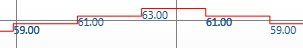

Display Measured Values
You want to display the measured value for the data point. Measured values display only when you stop the Trend View.

- The Show quality icons property must be selected.
- Select the series for editing from the legend for the Trend View.
- Click Properties .
- Click the Series Properties tab.
- Select the Show Values check box.
- Click Save
 .
. - The current measured values are updated in the chart each time the measured value of a data point changes.
- Click Stop
 .
.
- The measured values display on the Trend View.

NOTE:
Measured values display on top of one another when the changes to the measured values occur in quick succession or the selected time range is too large. Since the measured values are no longer readable, select a smaller time range or switch off the labels.